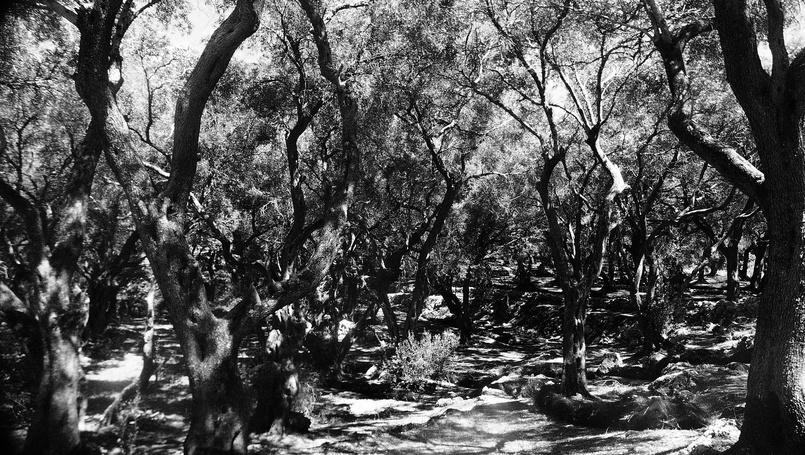
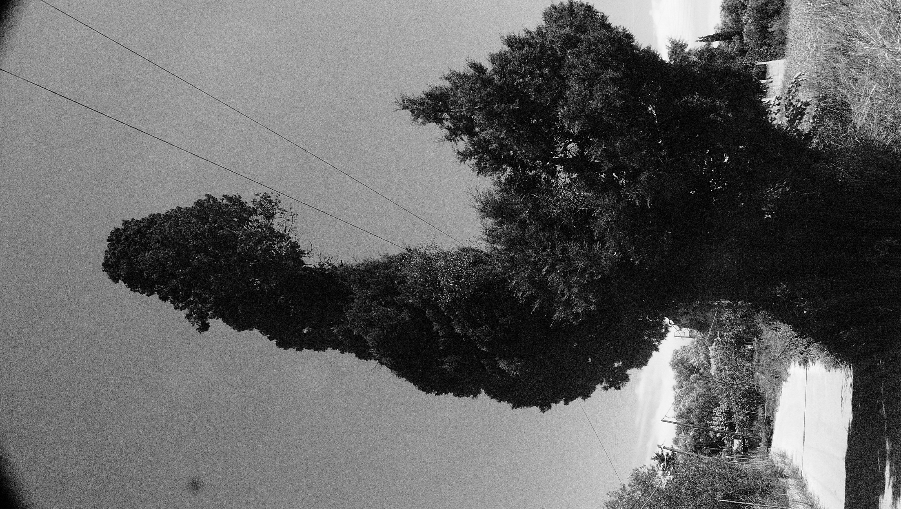

film / 2024
island's essences listened
This film is part of an ethnographic and post-anthropological exploration of the island of Corfu, conducted during my master's thesis. It delves into the unique characteristics of the island, moving beyond conventional imagery to capture the rhythms of its many life forms. Through sound improvisation and coded recordings, the project reconstructs a narrative that challenges anthropocentric perspectives.
The accompanying text works in tandem with the film to craft an odyssey, a counter-history of Corfu, viewed through the lens of dark ecology. The island is reimagined as a complex ecosystem where sentient natural elements like the sea, insects, fungi, and even the island itself engage in symbolic dialogues, reflecting their interconnectedness and co-dependence. These interactions reveal intricate webs of relationships, challenging human-centered narratives and emphasizing the agency of non-human actors.
Key Concepts and Themes: 1. Interconnectivity and Agency: Non-human entities are portrayed as active participants, engaging in decision-making and self-expression rather than serving as passive elements of the ecosystem. 2. Anthropocene and Resilience: The narrative addresses the challenges of the Anthropocene by showcasing the adaptive strategies of non-human actors and their collective strength in resisting environmental degradation. 3. Queer Assemblages: The film highlights non-linear and non-binary interactions between the island's inhabitants, defying traditional ecological classifications and embracing a multiplicity of relationships. 4. Transformative Counter-Histories: By imagining alternative narratives, the film proposes futures that center on resilience, adaptability, and ecological interdependence.
Narrative Elements: the island's diverse life forms, fungi, insects, and the sea, become active storytellers. The Sea: "I am the brine that binds, the solvent of histories, the medium through which life has flourished and fallen. My currents are the veins of this island, my depths its memory." The Fungi: "We are the silent weavers, the connectors of life. Our threads bind roots to rocks, nutrients to survival. We are the dark matter of this living cosmos." The Insects: "We are the pollinators and recyclers, small yet essential. Our wings beat with the rhythm of the earth; our lives, though brief, are impactful." These voices weave together to form a queer assemblage, an ecosystem that defies homogenizing human impact and finds strength in diversity and interconnection.
Ecological Frameworks: Dark Ecology (Morton) focuses on obscure and entangled processes that sustain life, highlighting cultural, technological, and cosmic interactions shaping island ecologies. Queer Ecology disrupts binary classifications of nature, emphasizing fluidity, multiplicity, and diverse ecological connections.
A Vision of Resilience: as the film unfolds, the Anthropocene looms as a shadow marked by carbon footprints and environmental degradation. Yet the island's collective voices rise in defiance, forming a phalanx of resilience. "Our strength lies in diversity, in the queer intersections of our existences. We transcend linear narratives through cyclical flows and interwoven relationships." The project invites viewers to reconsider who speaks, who listens, and who shapes the world we inhabit. It is a reflection on ecological interdependence and on non-human roles in shaping resilient futures.
YouTube: https://youtu.be/mtAkJfm0xIU
gallery
film stills / research image sources
